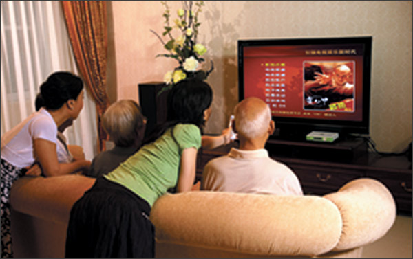

看看这个春节怎么过？海外华人的新主流
（弗吉尼亚州维也纳）
离春节不到一个月，不能回国过年，身在海外的华人该如何让这个春节过得有声有色？在一项"今年春节你怎么过？"针对海外华人进行的市场调研中，受众被问及你最喜欢的过年方式(多选)：
A. 就和朋友家人一起出去吃饭
B. 忙着给各地亲友打电话拜年
C. 去朋友在家聚会Party
D. 和家人一起看春节晚会
调查显示：65%的海外华人表示春节就和朋友家人一起出去吃饭，78%的人认为会忙着给中港台的亲戚朋友打电话拜年，53%的会去朋友家Party，85%的反映会和家人一起看春节联欢晚会，打电话拜年和看春晚的占绝大多数。看来，这个春节的新主流就是"越洋电话大拜年，看虎年春晚不花钱。"
虎年春节大计一览表
>越洋电话大拜年
iTalkBB新家庭电话，为你远在中港台的亲友打电话拜年吧。不需要担心像用电话卡一样，送不出拜年的问候；也不用让中港台的亲友守在计算机前等待遥远的祝福。iTalkBB让你和远隔重洋的亲朋好友保持通话。$24.99的全球包月计划，让您在春节来临之际可以享受无限越洋拜年的畅聊乐趣；或是$4.99的家庭经济计划，打美加中港台只要2 cents/分钟，打多少，算多少，拜年电话的账单也是一样一目了然。
看虎年春晚不花钱
旨在"为海外华人提供更好的生活"的iTalkBB，特别推出新春大礼包：现在只要您购买iTalkBB新家庭电话，就可以获得全方位的春节服务套餐--3个月免费魅力中国中文电视。全新"视听体验"，中央4套，凤凰卫视信息台、湖南卫视，30多个电视台，节目任选，新闻娱乐一体化；最新电影电视剧随便看；更有卡拉OK ，几百首流行音乐任你飙，想唱就唱！全新娱乐休闲体验，让你足不出户，就可以享受多彩春节！
聚集亲友，共度佳节：这个春节"虎虎生威"！
大雪纷飞的寒冬，宅在家里又如何？给远方的亲朋好友一个祝福的拜年电话，将关怀传递到中国、香港或是台湾；邀身边的亲朋好友到家里一聚，一起看场免费国产大片或是比拼一下看谁是K歌之王，将热闹聚在家里。iTalkBB为您提供全面、新颖、热闹非凡的过年大计，虎年迎新春，iTalkBB最主流！
活动详情，请拨打24小时服务热线1-877-482-5522，或登录官方网站www.iTalkBB.com。
关于iTalkBB：
iTalkBB新电信是享誉全美的优秀通讯品牌，是国际电讯行业的领导和先驱。其以顶级全球网络和前沿技术为依托，以最具竞争力的价格为客户提供高质、清晰的本 地、国内及国际长途电话服务，以及高清中文电视直播、回播与点播服务。其电话业务能完全取代传统家庭电话，并享受多重免费提供的附加功能如来电等待、三方通 话、来电显示、呼叫转移等。另有独一无二的功能——中国大陆、台湾、香港、南韩当地号码，当地亲友只要拨打此号码，就能接通到在美国的亲友，而无需支付国际 长途费用 。iTalkBB的高清中文电视服务，自问世以来便受到了广泛的好评和欢迎。超过五十个热门频道支持实时直播与48小时回看，海量最新电影电视剧综艺节目免 费无限点播，让用户以最低价格尽享华语娱乐。iTalkBB新电信将不断努力，与您共同成就更美好的生活。iTalkBB设有24小时中英文的客户服务热线: 1-877-482- 5522和官方网站www.iTalkBB.com，一年365天提供不间断的服务与更多信息的查询。